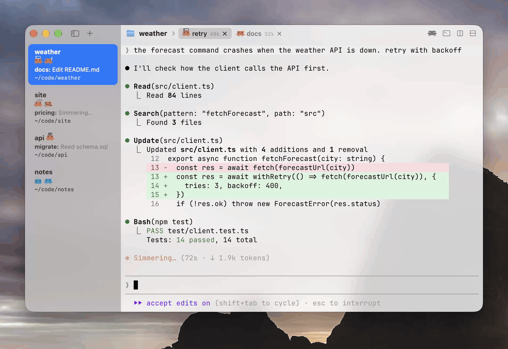
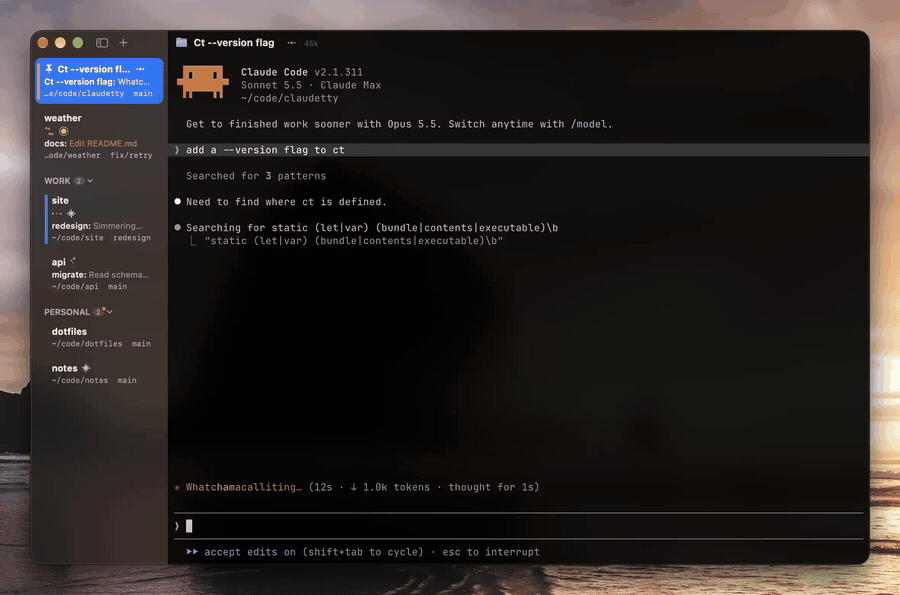
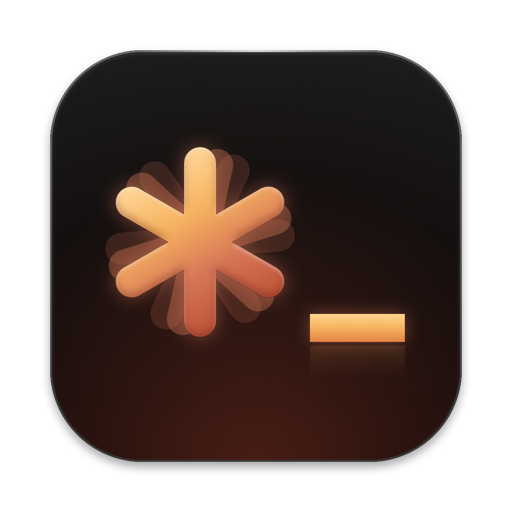

ClaudeTTY
A Mac terminal for running as much Claude Code as you'll ever need.

Why. I let Claude write the code and only step in now and then. You don't really need file trees or editors for that, so I took them out.
Before this. I used cmux, but it crashed a lot and updates killed everything. ClaudeTTY keeps the layout I liked, groups in a sidebar and tabs in the titlebar, without the bloat.
looks
See what every Claude is doing. Each tab's dots move for what its Claude is doing, or switch to Clawd and he acts it out. Waiting on you turns amber.
These are the app's own frames, dumped from Marks.swift and played at 60 fps. In the app the dots hold for a quarter second, so quick file reads don't strobe.~/code/weatherTabs sleep. 20 minutes after a Claude's last message its process exits and the memory comes back. Click the tab and it picks up the same conversation.
A sleeping Claude's prompt cache runs out after an hour and Clawd turns icy cyan, since the next message costs more. View > Keep Asleep Tabs Warm pings it at 49 minutes instead.
inside

zmxzmxzmxzmxTabs live outside the app. Each one is a zmx session, its own process holding a shell and its Claude. The app only attaches to them, so quitting, crashing or updating it never touches what's running.
Ghostty underneath. Every pane is GhosttyKit, built from pinned, patched Ghostty source. zmx runs the same terminal core, so a tab looks the same after the app reattaches.
About 7,000 lines in three files. ClaudeTTY.swift, Marks.swift and Surface.swift. Small enough to read in an afternoon, or to have Claude change for you.
numbers
Memory with one idle tab, on my M4 Pro:
Every tab keeps running
Reopens your layout, what was running is gone (unless you use tmux)
Closing the terminal is fine; a server restart ends every tab
What each Claude is doing8 live marks, amber when it needs you
A ring when one needs you
Working, blocked or idle
Claude steering tabsct, taught in ~75 tokens
CLI and socket
CLI and socket
herdr 0.9.5 runs inside your terminal, so its memory is herdr plus Ghostty (herdr alone is 25 MB). Restart behavior from the herdr docs and the cmux README. Median of 5 launches, one window with one tab. How I measured and the rest of the table is in the README.
ct
ClaudeTTY installs a Claude Code plugin and a ct command, so the Claude in one tab can open, watch and steer the others.
ct list # every tab, its group, folder and Claude statect web dev bun run dev # open tab "dev" in group "web", running a commandct split dev right agent claude # a new pane beside it with Claude in itct wait agent idle # block until that Claude is donezmx send agent "run the tests" # type into it
Don't even look at this, it's for your Claude. ClaudeTTY teaches it to Claude automatically in ~75 tokens.
install
Download ClaudeTTY.dmg, open it and drag ClaudeTTY to Applications. It updates itself after that.
On your phone or tablet, just use the Claude app. It's pretty good.